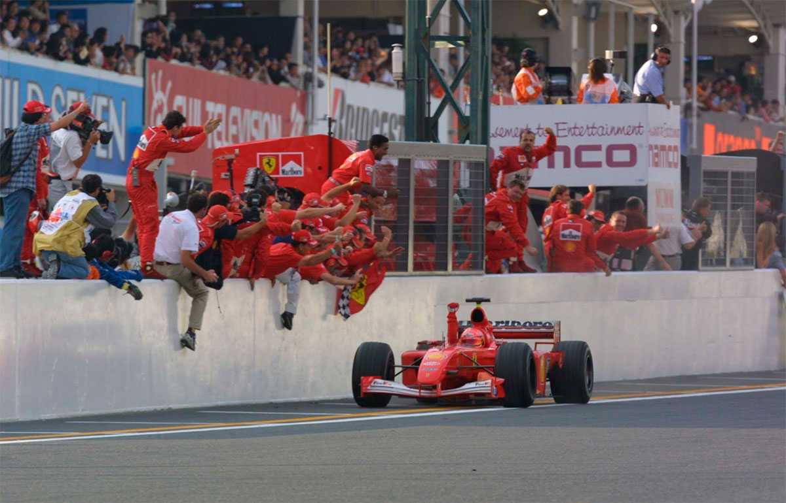

Suzuka - 14/10/2001
ESTÁ SOBRANDO!

Michael Schumacher encerra uma temporada dominante com mais uma vitória no Japão, liderando a corrida do início ao fim, enquanto seu companheiro de equipe, Rubens Barrichello, terminou em quinto lugar. Montoya e Coulthard fecharam o pódio.
POR VENÍCIO ZAMBELI
A verdade é que Michael Schumacher sobrou em 2001. Foram nove vitórias e 12 pole positions em 17 corridas, 123 pontos somados no campeonato — quase o dobro do vice-campeão David Coulthard, que contabilizou 65 —, o recorde de maior vitorioso na história da Fórmula 1 e a conquista do tetracampeonato. O piloto alemão da Ferrari terminou a temporada como começou: vencendo. O 1º lugar no Grande Prêmio do Japão foi a 53ª conquista de sua carreira na Fórmula 1. O domínio de Schumacher começou logo nos treinos, quando fez o melhor tempo. Por três vezes seguidas, o número 1 superou sua própria marca na classificação, com 1min32s484. Juan Pablo Montoya, da Williams, o 2º no grid, ficou a 0s700 do pole position, diferença muito grande na categoria. Na corrida, Schumacher manteve a frente e, logo no início, abriu boa vantagem para Montoya. O piloto só perdeu a posição quando fez suas duas paradas para troca de pneus e reabastecimento, mas logo a recuperou quando seus concorrentes também pararam. “Foi uma vitória tranqüila e estou muito contente por terminar este campeonato gratificante vencendo” disse o campeão de 32 anos. Mas enquanto o fim de semana foi perfeito para o alemão, seu companheiro de equipe, Rubens Barrichello, não tinha motivos para comemorar. O brasileiro lutava pelo vice-campeonato com o escocês Coulthard, da McLaren, mas não obteve êxito, depois de uma ousada estratégia adotada pela Ferrari. Barrichello precisava vencer a corrida e ainda torcer para que Coulthard não chegasse entre os quatro primeiros. O piloto, que largou na 4ª posição, fez então três paradas, contra apenas duas de seus concorrentes, na tentativa de superar os velozes carros da Williams. Logo no começo, ele superou Ralf Schumacher, mas depois não conseguiu ultrapassar Montoya, que seguiu em 2º até a bandeirada. “A estratégia era para um tudo ou nada. A única maneira de vencer seria parando três vezes, porque os carros da Williams estavam muito rápidos”, disse o brasileiro. A estratégia não deu certo e Barrichello acabou apenas na 5ª colocação, atrás também das duas McLaren (Coulthard foi o 3º e Häkkinen o 4º colocado) e à frente de Ralf Schumacher, que sofreu um stop and go por ter cortado uma chicane.
Mesmo assim, Ross Brawn, diretor técnico da Ferrari, elogiou o trabalho de Barrichello, lembrando que ele fez um papel fundamental na equipe em favor do título de Schumacher. “Gostaria de agradecer ao Rubens pela contribuição que ele deu ao time este ano e parabenizá-lo por conseguir o 3º lugar no campeonato, depois de um final de temporada imperfeito da equipe”, assumindo também parte da culpa por perder o vice-campeonato no Mundial de Pilotos, quando erros na estratégia, no pit e uma quebra de motor impediram a vitória do brasileiro no Grande Prêmio da Itália e depois nos Estados Unidos. Barrichello encerrou a temporada com cinco 2º lugares, cinco 3º lugares, e três 5º lugares, somando no total 65 pontos. Enrique Bernoldi largou dos boxes, em razão de problemas eletrônicos na volta de apresentação, mas recuperou-se e chegou em 14º, à frente do companheiro de equipe Arrows, Jos Verstappen.
DESPEDIDAS
A prova marcou também as despedidas oficiais de dois pilotos na categoria. Jean Alesi, da Jordan, fez sua última corrida na Fórmula 1. O francês envolveu-se em um forte acidente com Kimi Raikkonen, da Sauber, ainda na volta cinco. Raikkonen rodou na frente de Alesi, que não conseguiu desviar e evitar a batida. Os dois carros, enroscados, ainda acertaram juntos a barreira de pneus. “Fiquei triste por terminar minha carreira desta maneira, mas isso faz parte das corridas”, conformou-se Alesi, que estampava um sorriso no rosto e cumprimentou todos os mecânicos e integrantes da equipe depois da corrida. O outro piloto que não vai mais alinhar na temporada de 2002 é Hakkinen. Combativo, ele fez seu papel na corrida para ajudar seu companheiro Coulthard na conquista do vice-campeonato, entregando sua 3ª posição ao fim da corrida para o escocês, como forma também de agradecimento à equipe McLaren, que deu a ele dois títulos mundiais, 1998 e 1999. Mas se a Fórmula 1 perdeu dois grandes nomes para o próximo campeonato, ganhou Felipe Massa, que foi anunciado pela Sauber como piloto oficial para 2002. A temporada do ano que vem começará no dia 3 de março, em Melbourne, Austrália.
VOLTA EM GRANDE ESTILO
A Michelin voltou à Fórmula 1 e em seu primeiro ano já mostrou bons resultados
POR VENÍCIO ZAMBELI
Quando a marca francesa de pneus Michelin anunciou no dia 16 de dezembro de 1999 que retornaria à Fórmula 1 em 2001, poucos poderiam esperar um desempenho tão competitivo logo no início de sua reestreia. Na quarta corrida do ano, o piloto alemão Ralf Schumacher levou seu carro Williams BMW equipado com pneus Michelin à vitória do Grande Prêmio de San Marino, em Imola. Foi a demonstração da força da marca perante à competência já comprovada da concorrente japonesa Bridgestone, que forneceu sozinha os pneus para a categoria em 1999 e 2000, depois da saída da norte-americana Goodyear ao fim da temporada de 1998.
Um dos responsáveis pelo acumulo de bons resultados pela Michelin foi Pierre Dupasquier, diretor de competição da marca na Fórmula 1. Presente em todas as corridas, Dupasquier faz questão de acompanhar pessoalmente o desenvolvimento dos compostos em cada equipe que recebe os pneus franceses. Neste ano, cinco das 11 equipes usaram Michelin (Williams, Jaguar, Benetton, Prost e Minardi). O dirigente da marca disse que neste primeiro ano os resultados foram médios para a Michelin. “Nossos pneus não foram os melhores, mas conseguimos oferecer os nossos componentes em um nível muito próximo ao da concorrência”, disse Dupasquier. Ele elogiou a parceria feita com a equipe Williams, onde juntos alcançaram um significativo progresso. “Com a equipe inglesa conseguimos fazer frente à Ferrari e à McLaren nesta temporada”. E a expectativa é de que no ano que vem a disputa entre as duas marcas seja de igual para igual. “De acordo com os dados que pegamos nos circuitos durante todo este ano, vamos conseguir desenvolver um material mais eficiente e mais competitivo para 2002”, comentou.
Este ano a Michelin envolveu 40 engenheiros diretamente no trabalho de pista. Cerca de 10 jogos de pneus foram usados por carro em cada etapa do Mundial, fora aqueles utilizados em testes. Todo este empenho tem um objetivo: tornar-se a melhor daqui um tempo. Mas quando perguntado se poderia ser possível alcançar o título já no ano que vem, Dupasquier respondeu: “Mais vitórias deveremos conseguir — isso depende do crescimento de nossas equipes parceiras —, mas são poucas as chances de bater Michael Schumacher no campeonato, que poderá concentrar a maioria dos pontos da Bridgestone.